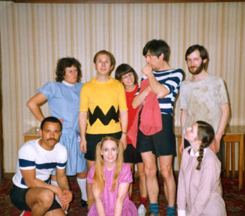

Chapter 16. You're a Good Man Charlie Brown
After the disappointment of War of the Worlds, we looked for something relatively uncomplicated that we could do with minimal fuss and minimal staging. So a show based on the Peanuts cartoon strip with such memorable characters as Charlie Brown, Lucy and Snoopy would be great fun and inject a rare touch of humour to our productions. The musical was written by Clark Gesner, first opened in 1967 and ran until 1971. Researching the musical at the time of writing, I discovered that it was revived in 1999 on Broadway and a new CD has been released.

Back in 1980, this show was put forward to Genesis Theatre. Everybody loved the idea, so we booked the Grange Arts in Oldham again. Our run would be from Thursday to Saturday, November 1st to 3rd 1980. Time was running out so put the whole show together very quickly. However in spite of the show being great fun to do, a number of events intervened to take the edge off our enthusiasm, as the production was beset with difficulties from the start.
Alison Davis, who was playing Lucy, was involved in a motorcycle accident and had to play throughout the show with her arm in a sling! Then the first snow of winter fell on the first night and continued for the run of the show. This resulted in very poor attendances, and one night the cast outnumbered the audience. Traditionally this means that the show should be cancelled and it was.
It was a great shame, because it was such a fun show to do. However we did get the chance to do it again the following year, but more of that later...